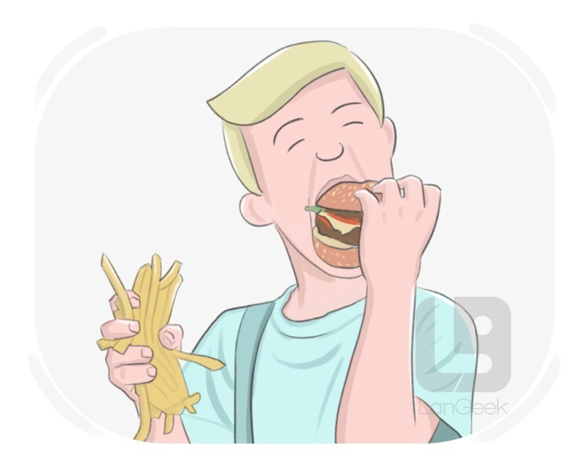
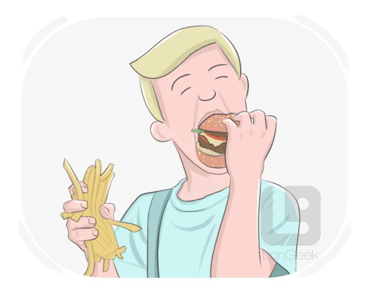

Big dreamer
Akjol Makhmudov is a famous wrestler from Kyrgyzstan. He was born in 1999 in a small village. His life was not easy from a young age.
But he had a big dream - to win a medal in the Olympic Games.
He started wrestling when he was 8 years old. It was a big challenge for him,
because the training was very hard. Sometimes he wanted to stop, but his coach and family helped to keep training and stay strong. So Akjol made a decision
to work hard every day.
He trained early in the morning till late at night. He is a big dreamer and hard-working. His motivation came from family
and his love for the sport. He really wanted to achieve his aim, so he never gave up.
In 2020, Akjol completed the Olympic Games in Tokyo. He won
a silver medal there. It was a great success, because he made a lot of afford for many years. He also made a plan for the future - to become an olimpic champion
one day and shares his experience with other wrestler from Kyrgyzstan, Kazakhstan, Japan, Russia and many others.
Akjol's story is not only about the sport, but also about hard work and big dreams.